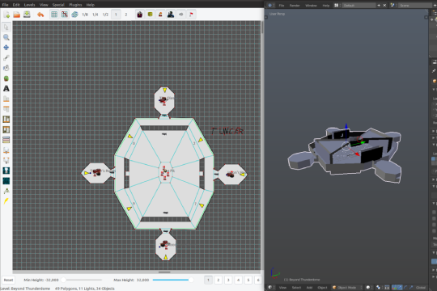

Weland (FORGE)
If making DOOM-like games interests you, than consider using the Weland application. Creating playable environments is simple,
essentially you connect dots to form polygons to make a birds eye view of a your map. Polygons can be rooms, platforms, fields, etc. Welands precursor,
FORGE, was used to make early Bungie
games, Marathon, Marathon II, and Marathon Infinity.
github.com/treellama/weland